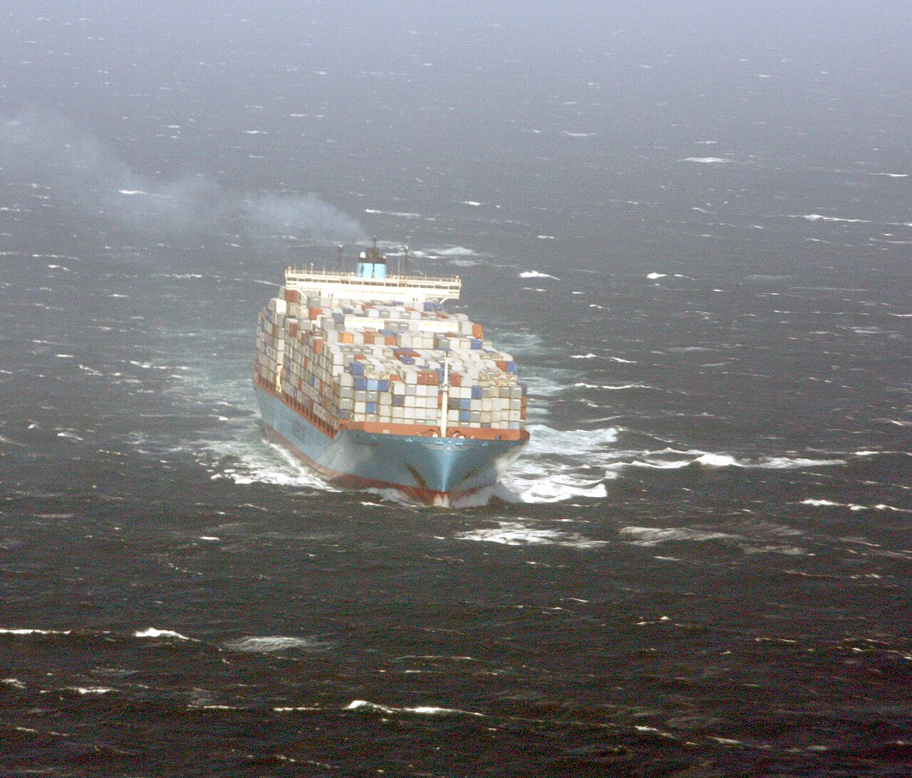

DINOv3 / MODEL REVIEW
船舶模型整合檢視
從訓練原圖、影片驗證與其他船舶負樣本，查看目前模型的參考資料及實際匹配結果。
1訓練原圖 · 12 張含原圖副本的增強圖片
9 / 20驗證影格達到門檻
5 / 7其他船舶被誤接受（全圖測試）
39%相似度門檻（含）

????

????

????

????

????

????

????

????

????

????

????

????

????

????

????

????

????

????

????

????
.jpg)
Ship COSCO Portugal (1).jpg
目標船候選（負樣本誤接受）
全圖相似度：63.46 / 100
The container ship COSCO Portugal outbound on the Elbe river near Cuxhaven
作者：Tvabutzku1234
授權：CC0 · 原始來源
.jpg){kind=link}
???

Container ship MV Maersk Alabama.jpg
目標船候選（負樣本誤接受）
全圖相似度：61.45 / 100
Container ship MV Maersk Alabama leaves Mombasa, Kenya, April 21, 2009, after spending time in port after a pirate attack that took her captain hostage.
作者：Laura A. Moore, U.S. Navy
授權：Public domain · 原始來源

???

Maersk kalamata seattle 20101127.jpg
目標船候選（負樣本誤接受）
全圖相似度：56.16 / 100
Photograph of the MAERSK KALAMATA, a container ship of the Maersk Line. The marking on the ship reads "Maersk Line" in large letters, and "Maersk Kalamata" near the bow.
作者：Ozymandias42
授權：CC BY-SA 3.0 · 原始來源

???

Cosco Taicang container ship.jpg
目標船候選（負樣本誤接受）
全圖相似度：43.06 / 100
Cosco Taicang container ship at Port of Seattle
作者：Ron Clausen
授權：CC BY-SA 4.0 · 原始來源

???
 001.jpg)
COSCO Glory (ship, 2011) 001.jpg
目標船候選（負樣本誤接受）
全圖相似度：41.87 / 100
Container ship COSCO Glory, Container Terminal Burchardkai, Port of Hamburg
作者：Fabian Horst from Flensburg, Germany
授權：CC BY 2.0 · 原始來源
_001.jpg){kind=link}
???

Calnexship.jpg
低於門檻
全圖相似度：38.10 / 100
The container ship Margrethe Maersk, operated by the Maersk Line, steams toward California in May 2010. NOAA researchers and collaborators studied the ship's emissions in detail from a research aircraft (from which this photo was taken) and a research ship. The team found that as the container ship shifted to low-sulfur fuels and slowed down near the coast, air pollution emissions plummeted, with some pollutants dropping by as much as 90 percent.
作者：NOAA-image (Credit: NOAA)
授權：Public domain · 原始來源

???

Cosco Yantian.jpg
低於門檻
全圖相似度：31.28 / 100
Cosco Yantian cargando en el Puerto de Ensenada, México.
作者：Joaquín Guardado
授權：CC BY 2.0 · 原始來源

???